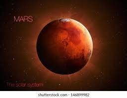
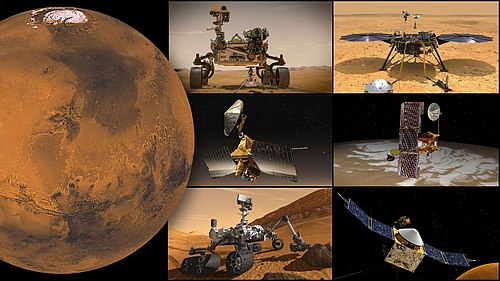
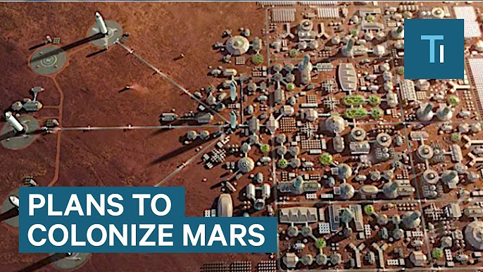

Mars: Red Planet |
|
Mars rotates on its axis, completing one rotation approximately every 24.6 hours, which is similar to Earth's day length. Its distance from Earth varies due to the elliptical nature of its orbit, with the closest approach (opposition) occurring approximately every 26 months.
|  |
Several missions have been sent from Earth to explore Mars: |
|
|
||
|  |
Future missions aim to further explore Mars and pave the way for human exploration and colonization: |
|
|
||
Human exploration of Mars poses several challenges, including:
Presented by Pallavi